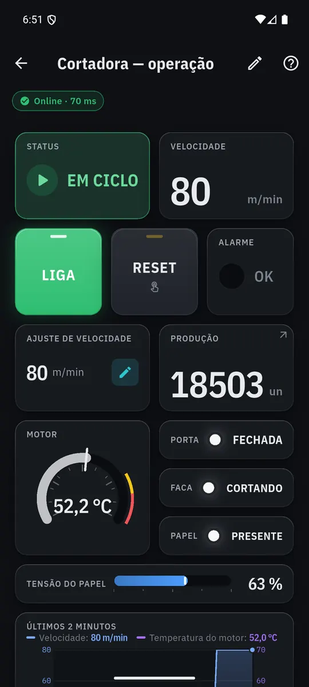

Seu celular vira a IHM da máquina.
Grátis, sem cadastro e sem nuvem. Conecte no CLP pela rede e monte a tela de operação em minutos.

O Ware IoT é só para Android. Mande o link para o celular Android que vai ficar na máquina.
Android 7 ou mais novoGrátisSem cadastro
Sem CLP por perto? Já vem uma máquina de demonstração.
Está no computador? Aponte a câmera do celular Android para baixar.

O app em números
- 13elementos de tela
- 7jeitos de agir no botão
- 6tipos de modelo pronto
- 6protocolos
- R$ 0para baixar e usar
Por que é grátis? A Celiware ganha com o hardware que vende na loja, não com anúncio, assinatura ou os seus dados. Seus dados ficam no celular.
Em 3 passos
-
Ponha o celular na rede da máquina
No mesmo Wi-Fi do CLP. Se o CLP só tem RS-485, um conversor resolve.
Ver conversor na loja -
Cadastre o equipamento pelo IP
Digite o IP ou toque na lupa para procurar no Wi-Fi. O Testar conexão diz se o equipamento respondeu ou o que conferir.
-
Monte a tela
Em branco ou de um modelo pronto. Botões, lâmpadas, mostradores, gráficos e OEE. Tudo fica salvo sozinho.
Do jeito que aparece no celular
Print do app com a máquina de demonstração que já vem dentro dele.
- Acende quando a máquina confirmaNão quando você toca. Aqui o CLP não confirmou o LIGA, e o botão avisa: SEM RETORNO.
- Sem comunicação, nunca um zero falsoO selo de conexão fica vermelho e a tela mostra o último valor lido, esmaecido.
- Alarme sempre no mesmo lugarNa faixa do topo, em qualquer tela. O espaço já é reservado: a tela não pula quando um alarme chega.
Para quem é
-
Integrador
- Monta a tela no celular, sem computador e sem programar.
- Digita a memória como no manual (D100, M0) em CLPs Inovance, INVT, WEG e Delta.
- Manda o projeto pronto para o cliente por WhatsApp ou e-mail.
-
Dono ou líder de produção
- Produção, velocidade e OEE na tela, calculados com as memórias do CLP.
- Tela só de acompanhamento, para olhar sem comandar.
- Histórico gravado no celular, com planilha para o Excel.
-
Operador
- Botão que só acende quando a máquina confirma.
- Alarme com cor, forma e número, também falado no fone.
- Receita aplicada com uma confirmação.
O que você precisa
Um celular Android e um CLP, inversor ou IHM que fale Modbus. Se faltar uma peça, a loja Celiware tem.
-
Conversor RS-485/232 → Wi-Fi
Para CLP ou inversor sem porta de rede. Leva o sinal da máquina até o Wi-Fi.
-
Roteador 4G com VPN
Para acompanhar a máquina de longe, por um caminho seguro.
-
Repetidor Wi-Fi
Para o sinal chegar forte até o painel da máquina.
Não sabe qual? Veja os três jeitos de conectar.
Perguntas frequentes
É seguro comandar a máquina pelo celular?
O Ware IoT é uma IHM: mostra a máquina e manda comandos para o CLP, como a tela do painel. Não é um sistema de segurança e não substitui intertravamentos nem o botão de emergência. Esses continuam no CLP e no painel.
O botão só acende quando a máquina confirma, e os ajustes pedem confirmação antes de gravar. De longe, prefira telas só de acompanhamento.
É grátis mesmo?
Sim. Sem anúncio, sem assinatura e sem cadastro. A Celiware ganha com o hardware que vende na loja, não com o app.
Funciona com o meu CLP?
Se ele fala Modbus TCP, de qualquer marca, sim. Modbus RTU e ASCII funcionam por um conversor ligado na rede ou por um cabo USB-OTG no celular. O app também fala Siemens S7, OPC UA (sem criptografia), MQTT e a mensagem própria de um Arduino ou ESP. Para CLPs Inovance, INVT, WEG e Delta e os inversores MD500 e GD20, já traz o mapa de memória do manual.
Tudo passa nos nossos testes com simulador, mas ainda não foi conferido em equipamento real. Veja a tabela de compatibilidade.
E se cair o Wi-Fi?
A tela continua com o último valor lido, esmaecido, e o selo de conexão fica vermelho: nunca aparece um zero falso. O app tenta de novo sozinho, com espera crescente até 10 segundos, e volta a ler assim que a rede volta. Comando que a máquina não confirmou não acende o botão.
Precisa de internet?
Não. O celular só precisa estar na mesma rede Wi-Fi da máquina. Internet só para baixar o app ou para ver a máquina de longe, pelo roteador 4G.
Funciona com RS-485?
Sim, com um conversor RS-485 → Wi-Fi: ele fica ligado no fio da máquina e o celular conversa com ele pela rede. Ou com um cabo USB-OTG e um adaptador RS-485 ligados direto no celular (novo no app, ainda em conferência com equipamento real). Veja como ligar.
Meus dados vão para a nuvem?
Não. Telas, variáveis e histórico ficam só no celular. Para levar o projeto para outro aparelho, você mesmo envia o arquivo, por WhatsApp, e-mail ou Drive.
Dá para ver a máquina de longe?
Sim, com um roteador 4G com VPN instalado na máquina. O passo a passo está em Como conectar.
Tem para iPhone?
Não. O Ware IoT é só para Android, versão 7 ou mais nova.
Tem para Windows?
Ainda não. Por enquanto o Ware IoT é só para Android.
Começando agora? Quero aprender automação
Seu celular vira a IHM da máquina.
Grátis, sem cadastro e sem nuvem. Experimente com a máquina de demonstração antes de ligar no CLP.
O Ware IoT é só para Android. Mande o link para o celular Android que vai ficar na máquina.
Android 7 ou mais novoGrátisSem cadastro
Está no computador? Aponte a câmera do celular Android para baixar.